Presentation & videos
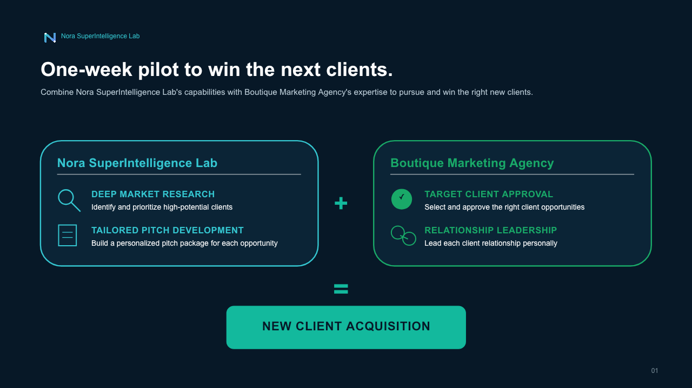
Read section text
Nora SuperIntelligence Lab
One-week pilot to win the next clients.
Combine Nora SuperIntelligence Lab's capabilities with Boutique Marketing Agency's expertise to pursue and win the right new clients.
Nora SuperIntelligence Lab
DEEP MARKET RESEARCH
Identify and prioritize high-potential clients
TAILORED PITCH DEVELOPMENT
Build a personalized pitch package for each opportunity
Boutique Marketing Agency
✓
TARGET CLIENT APPROVAL
Select and approve the right client opportunities
RELATIONSHIP LEADERSHIP
Lead each client relationship personally
+
=
NEW CLIENT ACQUISITION
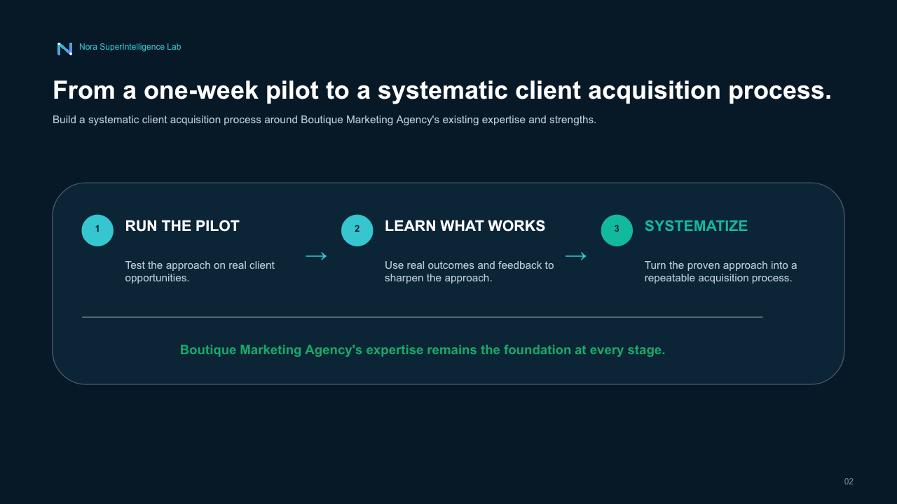
Read section text
Nora SuperIntelligence Lab
From a one-week pilot to a systematic client acquisition process.
Build a systematic client acquisition process around Boutique Marketing Agency's existing expertise and strengths.
1
RUN THE PILOT
Test the approach on real client opportunities.
→
2
LEARN WHAT WORKS
Use real outcomes and feedback to sharpen the approach.
→
3
SYSTEMATIZE
Turn the proven approach into a repeatable acquisition process.
Boutique Marketing Agency's expertise remains the foundation at every stage.
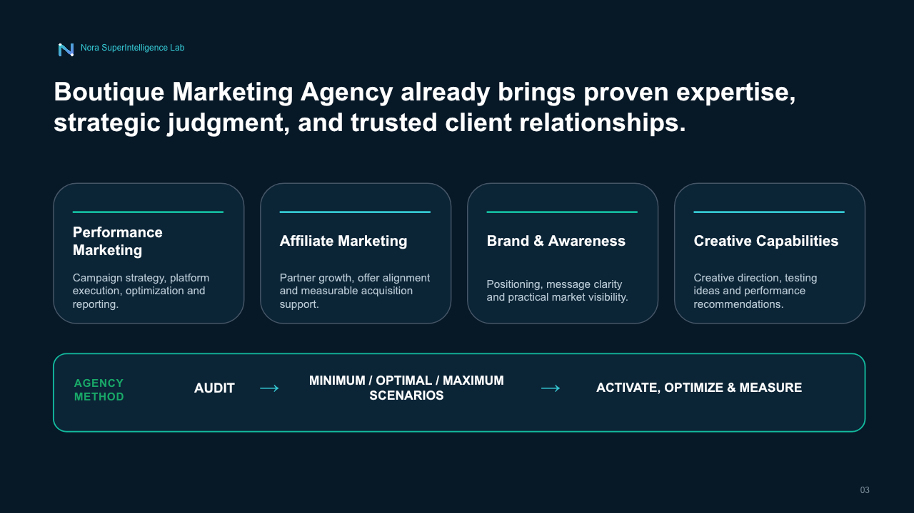
Read section text
Nora SuperIntelligence Lab
Boutique Marketing Agency already brings proven expertise, strategic judgment, and trusted client relationships.
Performance Marketing
Campaign strategy, platform execution, optimization and reporting.
Affiliate Marketing
Partner growth, offer alignment and measurable acquisition support.
Brand & Awareness
Positioning, message clarity and practical market visibility.
Creative Capabilities
Creative direction, testing ideas and performance recommendations.
AGENCY METHOD
AUDIT
→
MINIMUM / OPTIMAL / MAXIMUM SCENARIOS
→
ACTIVATE, OPTIMIZE & MEASURE
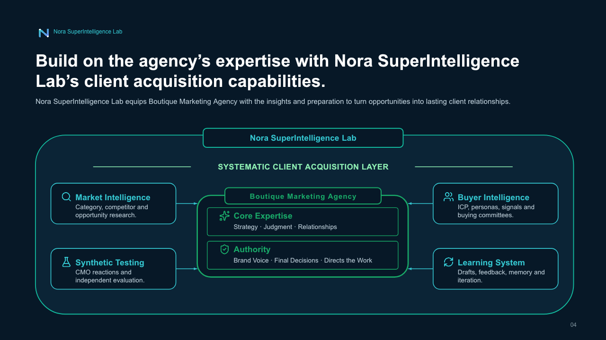
Read section text
Nora SuperIntelligence Lab
Build on the agency’s expertise with Nora SuperIntelligence Lab’s client acquisition capabilities.
Nora SuperIntelligence Lab equips Boutique Marketing Agency with the insights and preparation to turn opportunities into lasting client relationships.
Nora SuperIntelligence Lab
SYSTEMATIC CLIENT ACQUISITION LAYER
Market Intelligence
Category, competitor and opportunity research.
Synthetic Testing
CMO reactions and independent evaluation.
Buyer Intelligence
ICP, personas, signals and buying committees.
Learning System
Drafts, feedback, memory and iteration.
Boutique Marketing Agency
Core Expertise
Strategy · Judgment · Relationships
Authority
Brand Voice · Final Decisions · Directs the Work
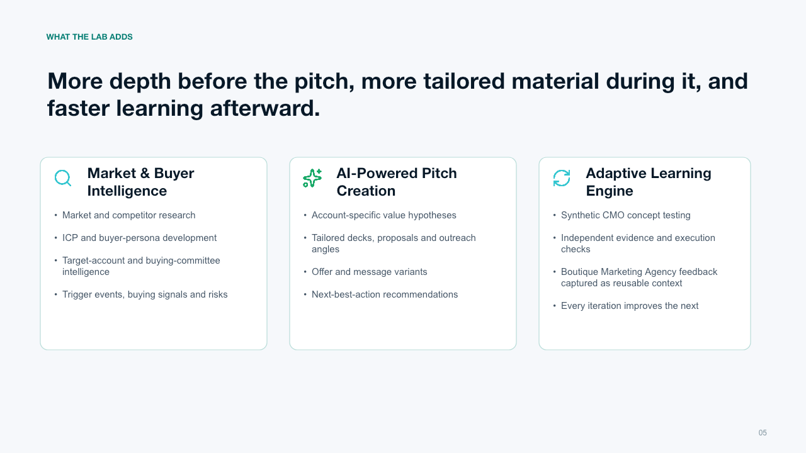
Read section text
WHAT THE LAB ADDS
More depth before the pitch, more tailored material during it, and faster learning afterward.
Market & Buyer Intelligence
Market and competitor research
ICP and buyer-persona development
Target-account and buying-committee intelligence
Trigger events, buying signals and risks
AI-Powered Pitch Creation
Account-specific value hypotheses
Tailored decks, proposals and outreach angles
Offer and message variants
Next-best-action recommendations
Adaptive Learning Engine
Synthetic CMO concept testing
Independent evidence and execution checks
Boutique Marketing Agency feedback captured as reusable context
Every iteration improves the next
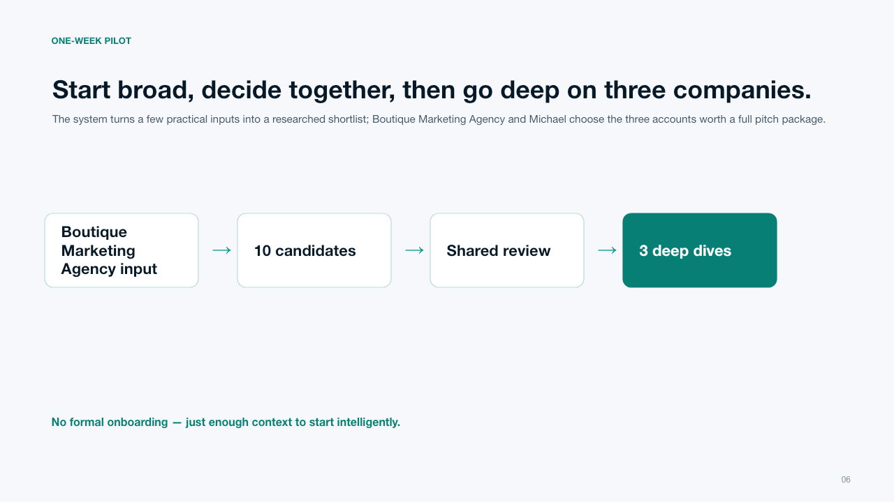
Read section text
ONE-WEEK PILOT
Start broad, decide together, then go deep on three companies.
Boutique Marketing Agency input
→
10 candidates
→
Shared review
→
3 deep dives
The system turns a few practical inputs into a researched shortlist; Boutique Marketing Agency and Michael choose the three accounts worth a full pitch package.
No formal onboarding — just enough context to start intelligently.
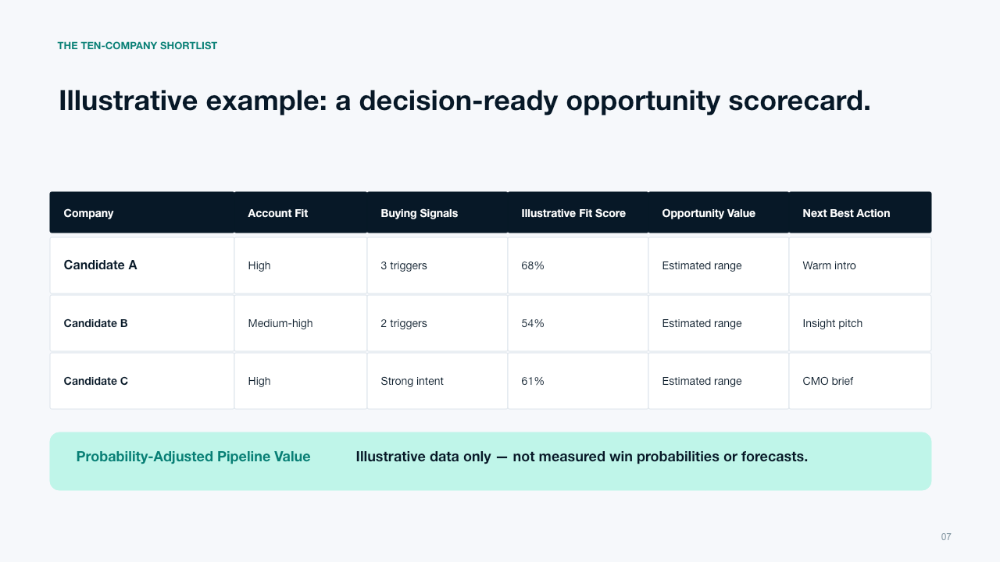
Read section text
THE TEN-COMPANY SHORTLIST
Illustrative example: a decision-ready opportunity scorecard.
Company
Account Fit
Buying Signals
Illustrative Fit Score
Opportunity Value
Next Best Action
Candidate A
High
3 triggers
68%
Estimated range
Warm intro
Candidate B
Medium-high
2 triggers
54%
Estimated range
Insight pitch
Candidate C
High
Strong intent
61%
Estimated range
CMO brief
Probability-Adjusted Pipeline Value
Illustrative data only — not measured win probabilities or forecasts.
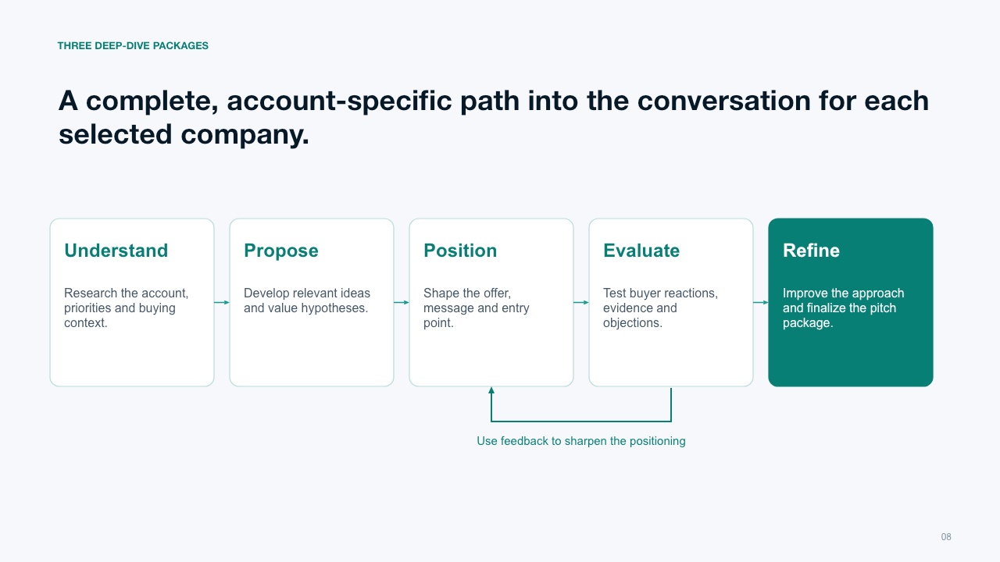
Read section text
THREE DEEP-DIVE PACKAGES
A complete, account-specific path into the conversation for each selected company.
Understand
Research the account, priorities and buying context.
Propose
Develop relevant ideas and value hypotheses.
Position
Shape the offer, message and entry point.
Evaluate
Test buyer reactions, evidence and objections.
Refine
Improve the approach and finalize the pitch package.
Use feedback to sharpen the positioning
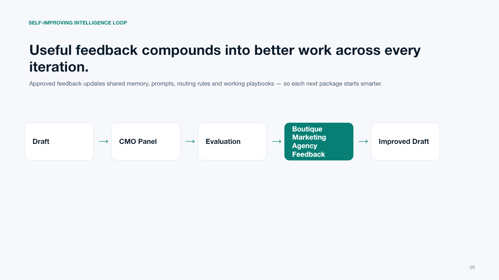
Read section text
SELF-IMPROVING INTELLIGENCE LOOP
Useful feedback compounds into better work across every iteration.
Draft
→
CMO Panel
→
Evaluation
→
Boutique Marketing Agency Feedback
→
Improved Draft
Approved feedback updates shared memory, prompts, routing rules and working playbooks — so each next package starts smarter.
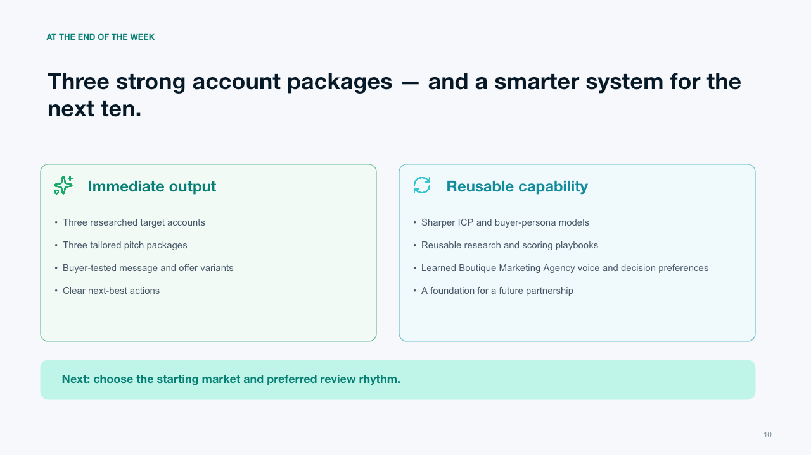
Read section text
AT THE END OF THE WEEK
Three strong account packages — and a smarter system for the next ten.
Immediate output
Three researched target accounts
Three tailored pitch packages
Buyer-tested message and offer variants
Clear next-best actions
Reusable capability
Sharper ICP and buyer-persona models
Reusable research and scoring playbooks
Learned Boutique Marketing Agency voice and decision preferences
A foundation for a future partnership
Next: choose the starting market and preferred review rhythm.
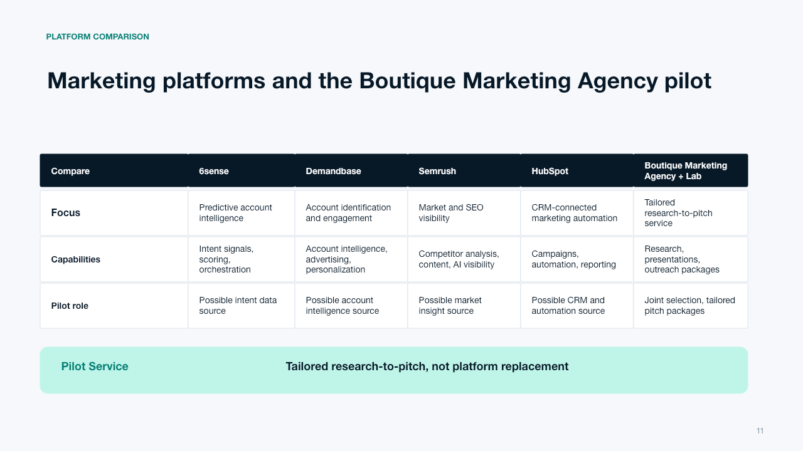
Read section text
PLATFORM COMPARISON
Marketing platforms and the Boutique Marketing Agency pilot
Compare
6sense
Demandbase
Semrush
HubSpot
Boutique Marketing Agency + Lab
Focus
Predictive account intelligence
Account identification and engagement
Market and SEO visibility
CRM-connected marketing automation
Tailored research-to-pitch service
Capabilities
Intent signals, scoring, orchestration
Account intelligence, advertising, personalization
Competitor analysis, content, AI visibility
Campaigns, automation, reporting
Research, presentations, outreach packages
Pilot role
Possible intent data source
Possible account intelligence source
Possible market insight source
Possible CRM and automation source
Joint selection, tailored pitch packages
Pilot Service
Tailored research-to-pitch, not platform replacement
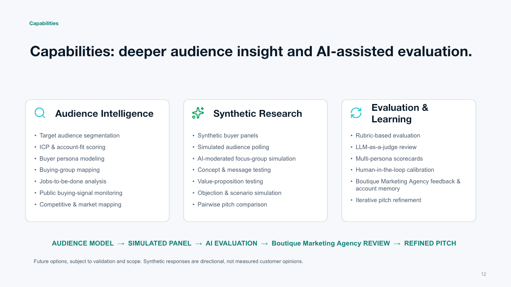
Read section text
Capabilities
Capabilities: deeper audience insight and AI-assisted evaluation.
Audience Intelligence
Target audience segmentation
ICP & account-fit scoring
Buyer persona modeling
Buying-group mapping
Jobs-to-be-done analysis
Public buying-signal monitoring
Competitive & market mapping
Synthetic Research
Synthetic buyer panels
Simulated audience polling
AI-moderated focus-group simulation
Concept & message testing
Value-proposition testing
Objection & scenario simulation
Pairwise pitch comparison
Evaluation & Learning
Rubric-based evaluation
LLM-as-a-judge review
Multi-persona scorecards
Human-in-the-loop calibration
Boutique Marketing Agency feedback & account memory
Iterative pitch refinement
AUDIENCE MODEL → SIMULATED PANEL → AI EVALUATION → Boutique Marketing Agency REVIEW → REFINED PITCH
Future options, subject to validation and scope. Synthetic responses are directional, not measured customer opinions.
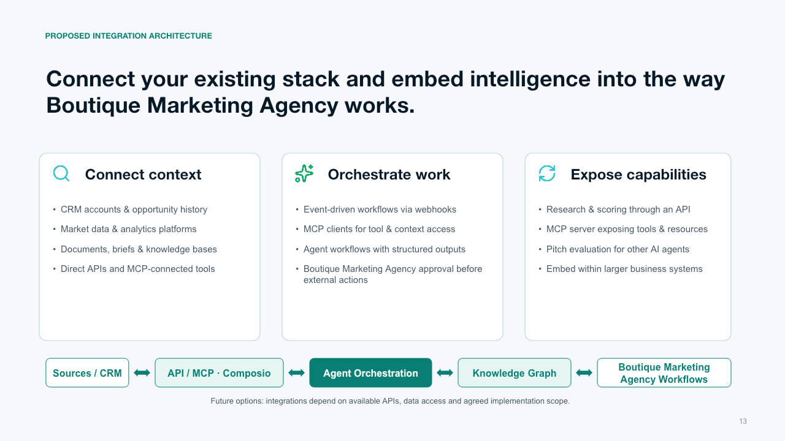
Read section text
PROPOSED INTEGRATION ARCHITECTURE
Connect your existing stack and embed intelligence into the way Boutique Marketing Agency works.
Connect context
CRM accounts & opportunity history
Market data & analytics platforms
Documents, briefs & knowledge bases
Direct APIs and MCP-connected tools
Orchestrate work
Event-driven workflows via webhooks
MCP clients for tool & context access
Agent workflows with structured outputs
Boutique Marketing Agency approval before external actions
Expose capabilities
Research & scoring through an API
MCP server exposing tools & resources
Pitch evaluation for other AI agents
Embed within larger business systems
Sources / CRM
API / MCP · Composio
Agent Orchestration
Knowledge Graph
Boutique Marketing Agency Workflows
Future options: integrations depend on available APIs, data access and agreed implementation scope.
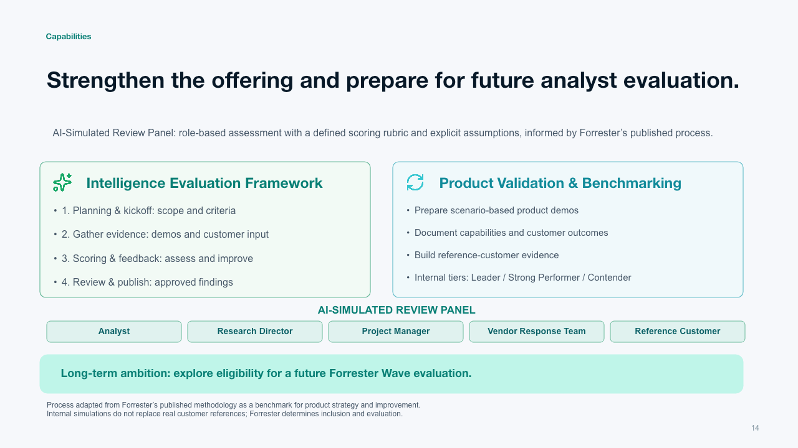
Read section text
Capabilities
Strengthen the offering and prepare for future analyst evaluation.
Intelligence Evaluation Framework
1. Planning & kickoff: scope and criteria
2. Gather evidence: demos and customer input
3. Scoring & feedback: assess and improve
4. Review & publish: approved findings
Product Validation & Benchmarking
Prepare scenario-based product demos
Document capabilities and customer outcomes
Build reference-customer evidence
Internal tiers: Leader / Strong Performer / Contender
Long-term ambition: explore eligibility for a future Forrester Wave evaluation.
AI-SIMULATED REVIEW PANEL
Analyst
Research Director
Project Manager
Vendor Response Team
Reference Customer
Process adapted from Forrester’s published methodology as a benchmark for product strategy and improvement.
Internal simulations do not replace real customer references; Forrester determines inclusion and evaluation.
AI-Simulated Review Panel: role-based assessment with a defined scoring rubric and explicit assumptions, informed by Forrester’s published process.
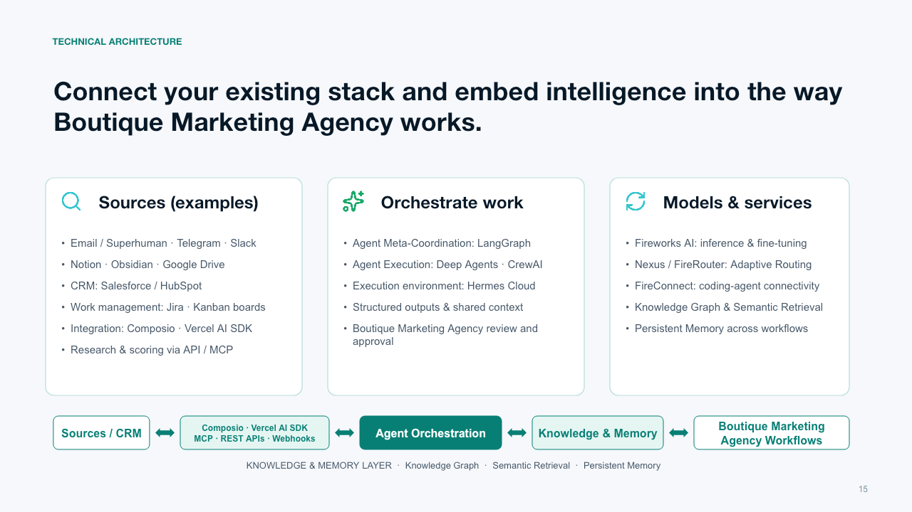
Read section text
TECHNICAL ARCHITECTURE
Connect your existing stack and embed intelligence into the way Boutique Marketing Agency works.
Sources (examples)
Email / Superhuman · Telegram · Slack
Notion · Obsidian · Google Drive
CRM: Salesforce / HubSpot
Work management: Jira · Kanban boards
Integration: Composio · Vercel AI SDK
Research & scoring via API / MCP
Orchestrate work
Agent Meta-Coordination: LangGraph
Agent Execution: Deep Agents · CrewAI
Execution environment: Hermes Cloud
Structured outputs & shared context
Boutique Marketing Agency review and approval
Models & services
Fireworks AI: inference & fine-tuning
Nexus / FireRouter: Adaptive Routing
FireConnect: coding-agent connectivity
Knowledge Graph & Semantic Retrieval
Persistent Memory across workflows
Sources / CRM
Composio · Vercel AI SDK
MCP · REST APIs · Webhooks
Agent Orchestration
Knowledge & Memory
Boutique Marketing Agency Workflows
KNOWLEDGE & MEMORY LAYER · Knowledge Graph · Semantic Retrieval · Persistent Memory
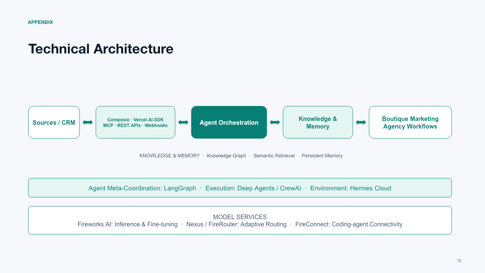
Read section text
APPENDIX
Technical Architecture
Sources / CRM
Composio · Vercel AI SDK
MCP · REST APIs · Webhooks
Agent Orchestration
Knowledge & Memory
Boutique Marketing Agency Workflows
KNOWLEDGE & MEMORY · Knowledge Graph · Semantic Retrieval · Persistent Memory
Agent Meta-Coordination: LangGraph · Execution: Deep Agents / CrewAI · Environment: Hermes Cloud
MODEL SERVICES
Fireworks AI: Inference & Fine-tuning · Nexus / FireRouter: Adaptive Routing · FireConnect: Coding-agent Connectivity